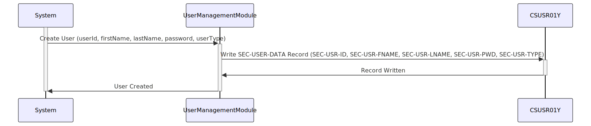

Gerado em: 1 de outubro de 2024
Título do Documento: Perfil de Segurança do Usuário - Especificação da Estrutura de Dados
Descrição Resumida:
Este documento descreve a estrutura do arquivo CSUSR01Y.cpy, que define como os perfis de segurança do usuário são armazenados no aplicativo CardDemo. Este não é um programa, mas um modelo que dita quais informações são armazenadas para cada usuário e como elas são organizadas.
Histórias do Usuário:
Como administrador do sistema, preciso de uma estrutura segura e bem definida para armazenar informações do usuário, incluindo IDs de usuário, senhas e níveis de acesso, para que eu possa gerenciar o acesso e as permissões do usuário de forma eficaz.
Épico Relacionado: 6 - Gerenciamento de Usuários e Segurança
Requisitos Técnicos:
- Estrutura de Dados:
- O código define uma estrutura de dados COBOL chamada
SEC-USER-DATA para representar um perfil de segurança do usuário.
- A estrutura consiste em seis campos:
SEC-USR-ID: Um campo alfanumérico de 8 caracteres para armazenar o ID exclusivo do usuário.SEC-USR-FNAME: Um campo alfanumérico de 20 caracteres para armazenar o primeiro nome do usuário.SEC-USR-LNAME: Um campo alfanumérico de 20 caracteres para armazenar o sobrenome do usuário.SEC-USR-PWD: Um campo alfanumérico de 8 caracteres para armazenar a senha do usuário.SEC-USR-TYPE: Um campo alfanumérico de 1 caractere para armazenar o tipo ou função do usuário.SEC-USR-FILLER: Um campo de preenchimento alfanumérico de 23 caracteres reservado para uso futuro.
- Tipos de Dados:
- Todos os campos são definidos como alfanuméricos (
PIC X) indicando que eles podem armazenar qualquer combinação de letras, números e caracteres especiais.
- Comprimentos de Campo:
- Cada campo tem um comprimento predefinido, garantindo consistência no armazenamento e recuperação de dados.
- Sem Criptografia ou Hashing:
- O código não especifica nenhum algoritmo de criptografia ou hashing para o campo
SEC-USR-PWD.
- Sem Validação de Dados:
- O código não inclui nenhuma regra de validação de dados para os campos.
Modelos Relacionados:
- Usuário:
userId (String): O identificador exclusivo do usuário.firstName (String): O primeiro nome do usuário.lastName (String): O sobrenome do usuário.password (String): A senha do usuário (idealmente criptografada ou com hash).userType (String): A função ou nível de acesso do usuário.
Configurações:
- Nenhuma especificada no código fornecido.
Melhorias de Código:
- Segurança de Senha:
- Implemente um algoritmo forte de hashing de senha (por exemplo, bcrypt, Argon2) para armazenar com segurança as senhas dos usuários. Nunca armazene senhas em texto simples.
- Validação de Dados:
- Adicione regras de validação de dados para garantir a integridade e validade dos dados do usuário. Por exemplo:
- Imponha requisitos mínimos de comprimento e complexidade de senha.
- Valide o formato e a exclusividade do ID do usuário.
- Defina valores permitidos para o tipo de usuário.
- Tratamento de Erros:
- Incorpore mecanismos de tratamento de erros para lidar normalmente com problemas potenciais durante o armazenamento ou recuperação de dados.
- Documentação:
- Adicione comentários para explicar a finalidade e o uso da estrutura de dados e seus campos.
- Remover Campo de Preenchimento:
- Em vez de usar um campo de preenchimento, considere adicionar novos campos conforme necessário no futuro. Isso melhora a legibilidade e a manutenção do código.
Melhorias de Segurança:
- Armazenamento Seguro de Senha:
- Como mencionado anteriormente, implemente um algoritmo forte de hashing de senha para proteger as senhas dos usuários contra acesso não autorizado.
- Controle de Acesso:
- Implemente mecanismos de controle de acesso para restringir o acesso aos dados do usuário com base nas funções e permissões do usuário.
- Criptografia de Dados:
- Considere criptografar dados confidenciais do usuário em repouso para protegê-los contra acesso não autorizado em caso de violação de dados.
- Auditorias de Segurança Regulares:
- Realize auditorias de segurança e revisões de código regulares para identificar e mitigar possíveis vulnerabilidades.
Diagrama Conceitual:

–Made by “Smart Engineering” (by Compass.UOL)–